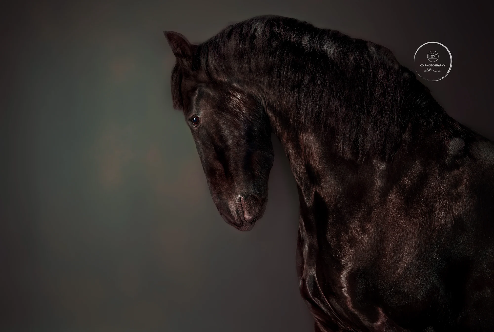
Paarden- en dierenfotograaf in Zele
Je dier, zoals jij het kent.
Colette fotografeert paarden, honden en hun mensen. Buiten bij natuurlijk licht, of als fine-artportret met haar mobiele studio.
Paardenfotografie
Drie manieren om je paard te laten vastleggen.
Dankzij mijn ervaring met paarden weet ik wanneer we even moeten pauzeren, en wanneer net dat spontane moment ontstaat.
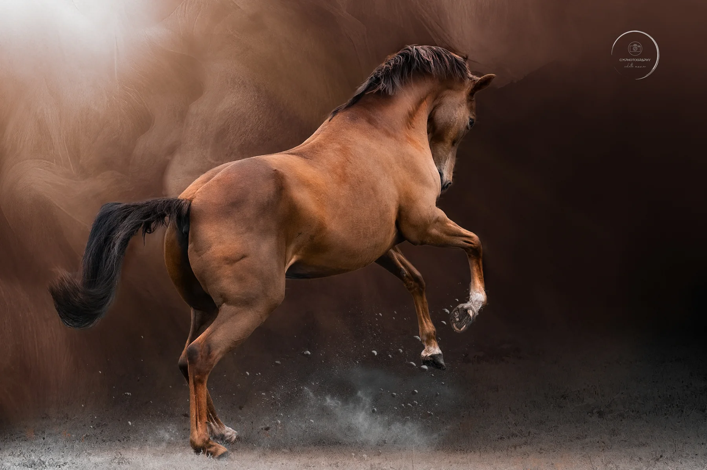
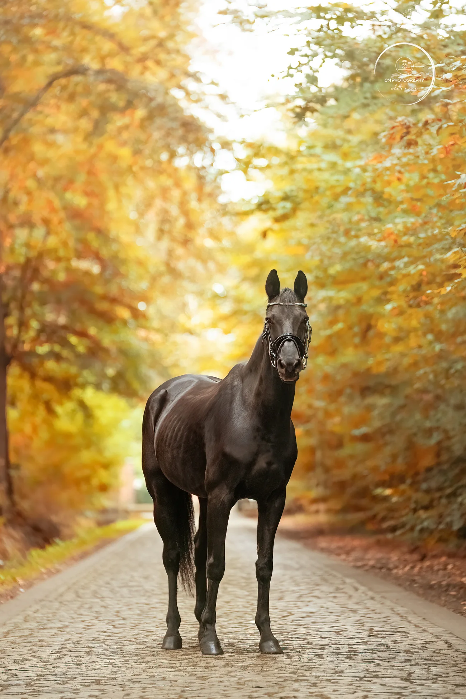
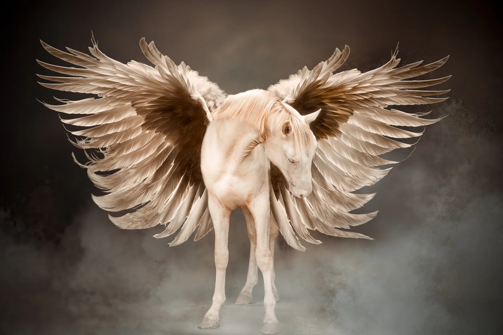
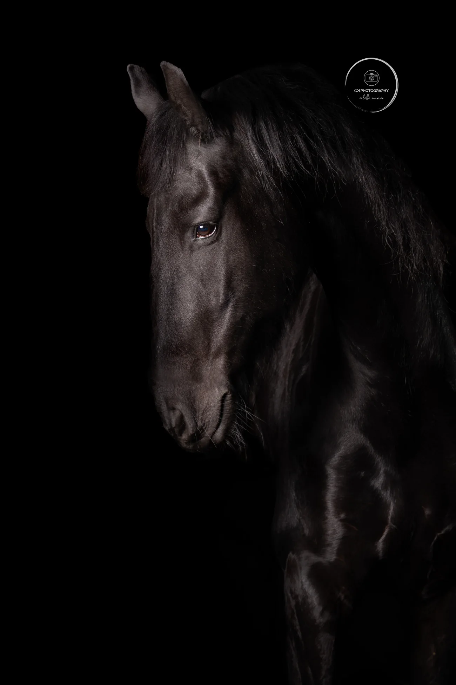
Afscheidsfotografie
Soms weet je dat de tijd samen bijna voorbij is.
Tijdens een afscheidsshoot ben ik rustig en discreet aanwezig, met alle respect voor jou en je paard. Niets moet. We nemen de tijd om vast te leggen wat voor jullie belangrijk voelt.
Deze beelden zijn persoonlijk. Ik deel ze alleen als jij daar uitdrukkelijk toestemming voor geeft. Ook videografie is mogelijk.
Neem contact opHonden en andere dieren
Van een kleine pup tot je lievelingskip.
Ik laat je huisdier eerst rustig wennen aan mij en mijn camera. We forceren niets. De shoot kan in de natuur, bij jou thuis of, voor kleinere dieren, in mijn studio in Zele.
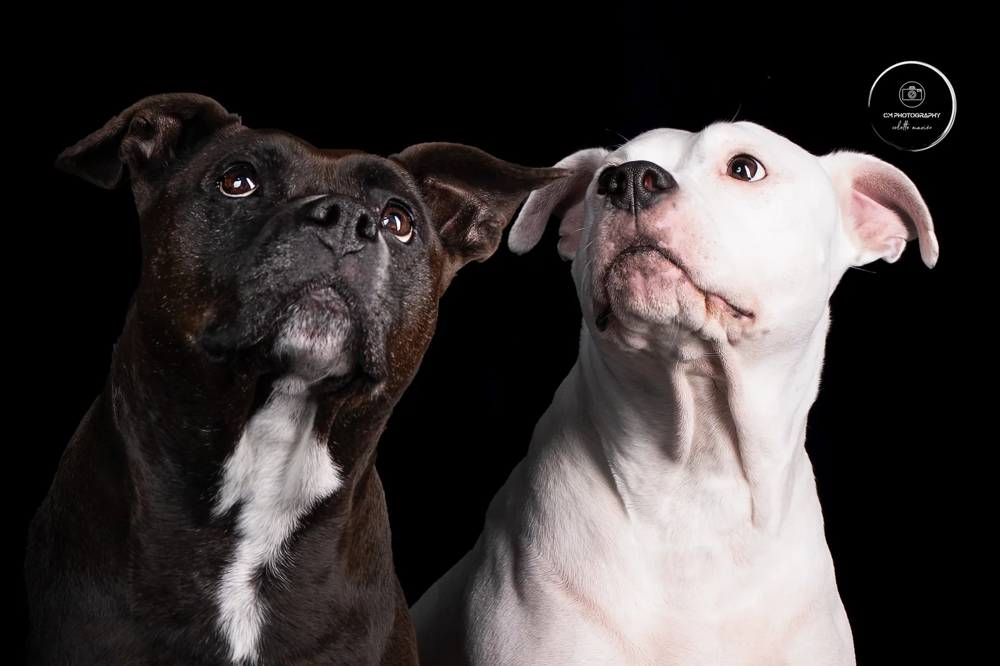
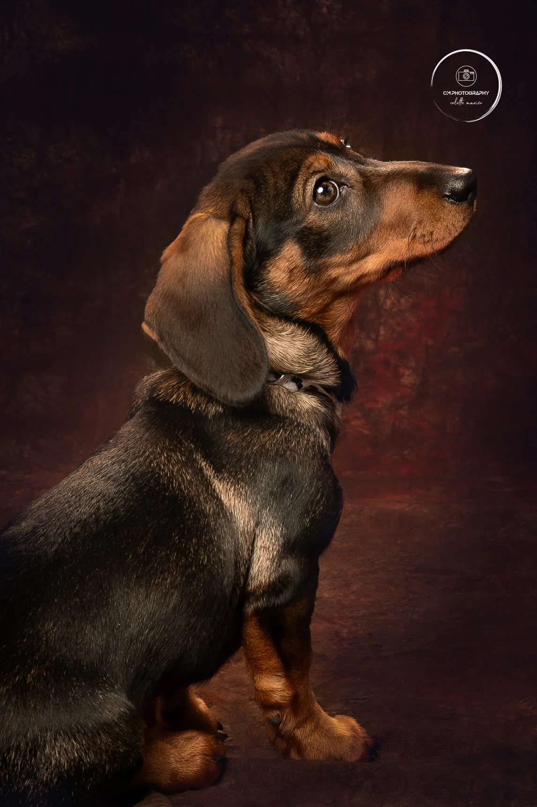
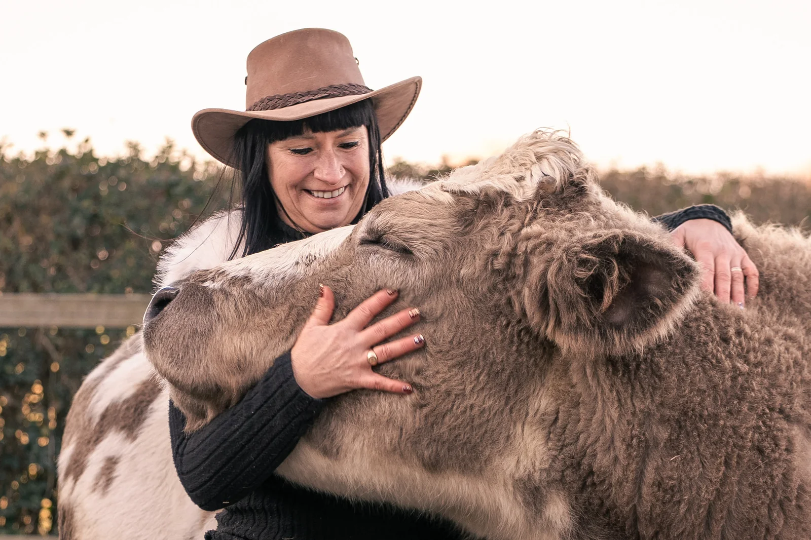
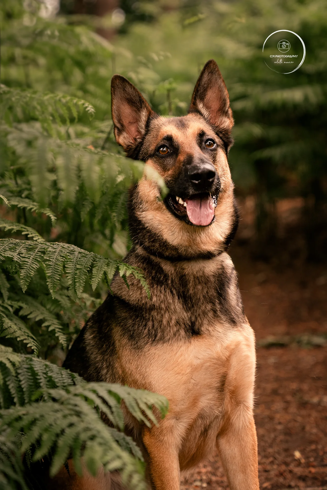
- 1 uur shoot
- 10 professioneel afgewerkte foto's
- Online galerij om je foto's te kiezen
- Extra foto's aan € 10 per foto
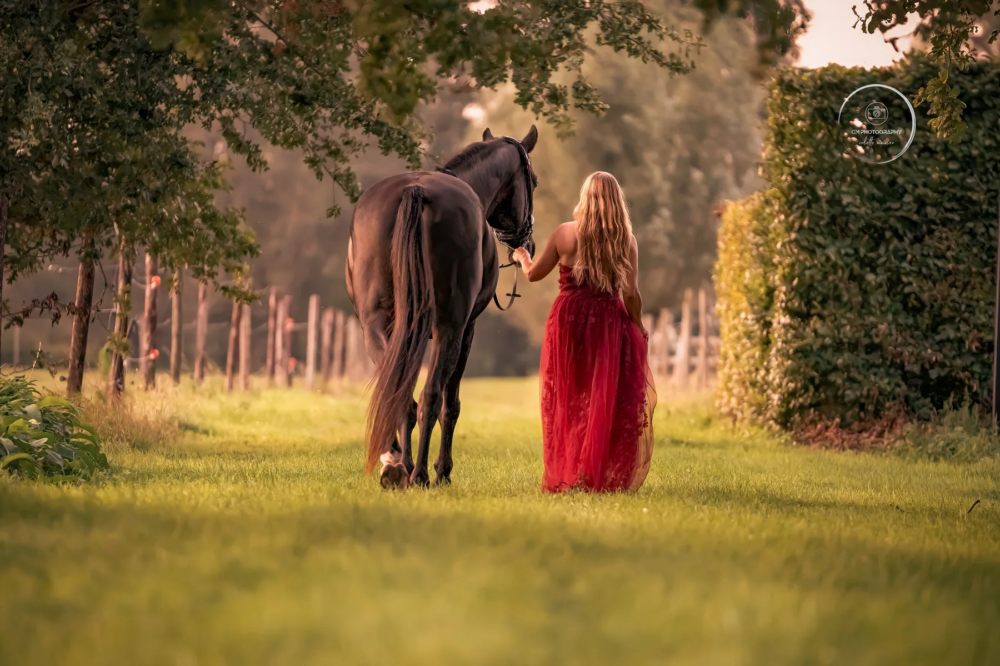
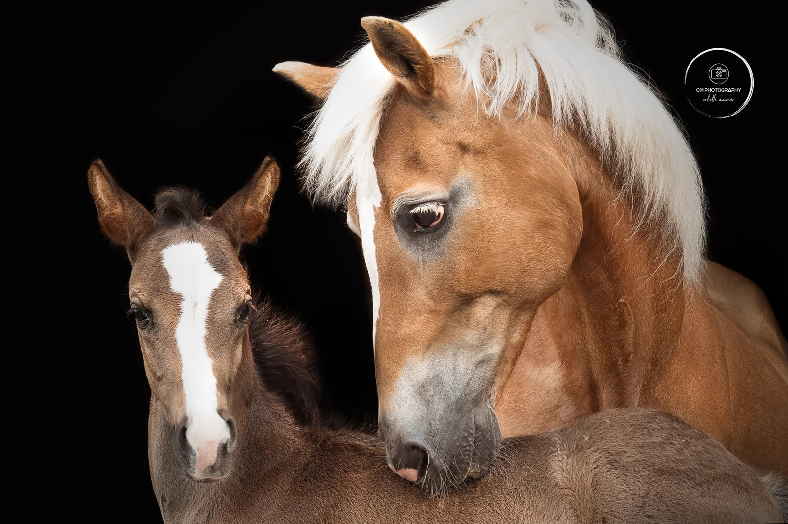
Werkwijze
Geen stijve poses, geen haast.
Wel rust, mooi licht en alle ruimte om jezelf te zijn. Een paar tips zodat de shoot vlot loopt:
- 1Stem je kledij af op je dier. Een blauwe leiband is leuk met een blauwe trui.
- 2Een nerveus paard? Laat het 10 minuten voor de shoot even longeren.
- 3Breng een favoriet speeltje mee. Bij paarden helpen snoepjes.
- 4Eén extra begeleider is voldoende.
"Wat een geweldige ervaring hadden wij met Colette! Ik had haar via FB gevonden en ze heeft foto’s getrokken voor mijn dochter haar communie en deze waren zoveel meer dan mijn verwachtingen! Mijn dochter staat heel naturel/speels/maar toch ook een verlegen kantje op de foto’s, helemaal hoe ze is! Top en een zekere aanrader!"
"Hele vlotte service, stelde de kindjes snel op hun gemak. Een echte aanrader! Zelfs voor een shoot met 5 kinderen, wat niet evident is direct na schooltijd !"
Je shoot aanvragen
Vertel me wie jullie zijn.
Geen paard en geen verhaal is hetzelfde. Laat weten welke shoot je wil en geef enkele richtdatums. Je aanvraag staat dan klaar in WhatsApp.
Studio
Van Hesedreef 669240 Zele